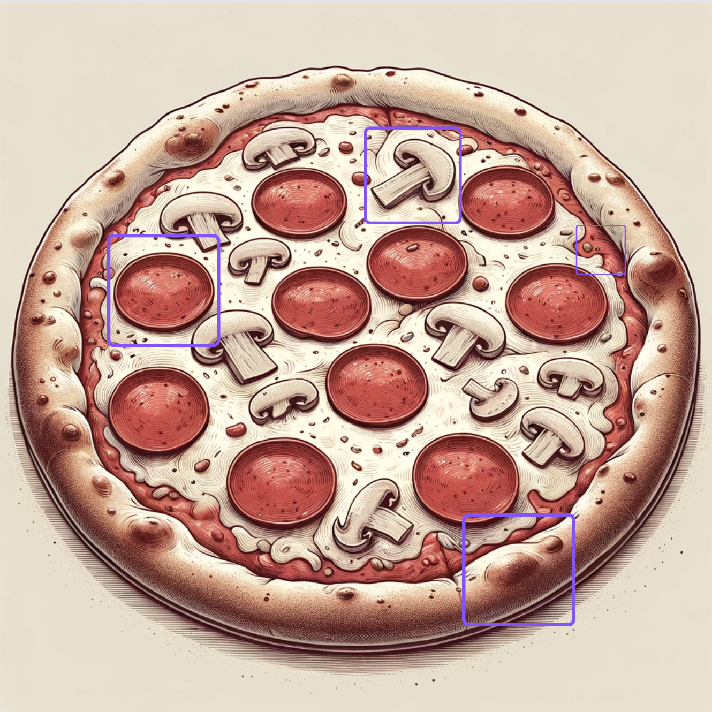
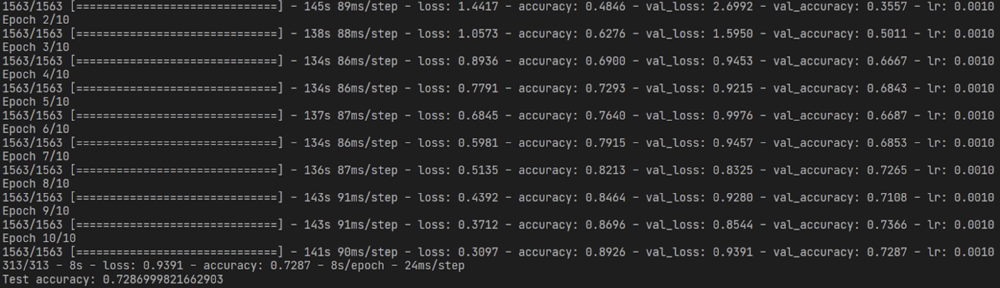

If you've ever wondered how computers manage to recognize faces or objects in photos, the answer lies in a remarkable process powered by something called Convolutional Neural Networks, or CNNs for short. These are incredibly smart algorithms that work somewhat like our own vision, sifting through images pixel by pixel, learning to spot patterns and nuances that escape the untrained eye. Whether it's distinguishing a cat from a dog in a snapshot or picking out a stop sign from a street scene, CNNs are being used behind the scenes. They're not just about power but also about the intricate efficiency in handling vast amounts of visual data, all while discerning details we might miss at a glance. So, let's dive into the world of CNNs.
Below is a general structure of a CNN. There’s an input image (yes it’s the same one from the blog on kernels!), a few layers and then the output. We will be going through each layer one by one using the definition as well as an analogy. Let’s start!
Convolutional Neural Networks Explained Layer by Layer with CIFAR-10 Case Studies
Image 1. Basic structure of a CNN (Image by author)
A. Input Layer
Images, at their core, are just numbers arranged in a two or three-dimensional space. Think of a grayscale image as a flat, two-dimensional array, while a color image adds that extra dimension for depth. When it comes to classifying these images, the key is to pull out all the crucial details they contain. Starting off, we get the image into the system. Those raw pixels, the numbers that make up the image, are plugged into the network as the first layer—the input layer. This is where we begin to make sense of what the image is all about.

Image 2. A numerical representation of an image (Image by author)
Analogy:
Imagine standing in a pizza shop, looking over the spread of pizzas in front of you. It's like getting a sneak peek at what you could be digging into - spotting the different sizes from the single-serve to the massive party pies, eyeing the variety of toppings scattered on top, checking out if they're cut in squares or the usual triangles, and judging how thick or thin the crust is. Each detail gives you a clue about what each pizza brings to the table.
Imagine standing in a pizza shop, looking over the spread of pizzas in front of you. It's like getting a sneak peek at what you could be digging into - spotting the different sizes from the single-serve to the massive party pies, eyeing the variety of toppings scattered on top, checking out if they're cut in squares or the usual triangles, and judging how thick or thin the crust is. Each detail gives you a clue about what each pizza brings to the table.
Image 3. Pizza shop analogy for the input layer (Image generated by DALL·E)
B. Convolutional Layer
The model learns by using something called filters that convolute through the image to understand its features. Imagine a small 3x3 grid sliding over a larger 6x6 image. They multiply together, number by number, in the overlapping sections. After this, depending on the filter we use, we often sum up these numbers to create a new feature map for the image. If the image has a lot of complex details, we might use more than one convolutional layer to help the model learn about these intricate features.
Image 4. An example of how convolution takes place (Image by author)
Analogy:
Using the pizza scene, think of the convolutional layer like the part where you zero in on the details of each pizza. You're not just glancing at them; you're spotting the pepperoni slices, the mushrooms tucked between the cheese, noting the crispiness of the crust, and even the gloss on the sauce. It's about picking up on all those little elements rather than just taking in the whole pizza at a glance.
Using the pizza scene, think of the convolutional layer like the part where you zero in on the details of each pizza. You're not just glancing at them; you're spotting the pepperoni slices, the mushrooms tucked between the cheese, noting the crispiness of the crust, and even the gloss on the sauce. It's about picking up on all those little elements rather than just taking in the whole pizza at a glance.

Image 5. A single pizza analogy for the convolutional layer (Image generated by DALL·E)
C. Pooling Layer
For the model to understand the essential features of an image, it uses what's known as a pooling layer. This layer simplifies the feature map by reducing its size, which in turn cuts down the amount of computation needed during training. It's crucial for helping the model recognize features that are important, regardless of their size or orientation in the image.The pooling layer distills the feature map, selecting the standout features from various areas of the image, so that the model can accurately classify the image even when it changes in scale or orientation. The most common pooling methods are max pooling and average pooling.
Analogy:
Bringing it back to the pizza shop scene, think about how not everything on the table matters to your pizza experience. There might be a packet of seasoning or someone's wallet lying nearby that you naturally overlook because they're not part of the pizza. The pooling layer in image processing works in a similar way. It filters out the bits that aren't important for identifying what the image is about — like ignoring everything that isn't pizza. By doing so, it also simplifies the amount of information the model has to work with, narrowing down the details to just the essentials.
Image 6. Pizza table analogy for the ppoling layer (Image generated by DALL·E)
D. Fully Connected Layer
Before this layer can be implemented, the feature maps from the previous step need to be flattened to a single dimension for which a flattening layer is used. Then, the fully connected layer takes the important features that have been singled out by the previous layers and leverages them for learning. It uses all the activations from the prior step, allowing the model to understand and train on the features. In this layer, every neuron is connected to every neuron in the preceding layer, integrating all the earlier identified features. This is the stage where the network synthesizes the information to comprehend the bigger picture and make decisions, such as recognizing the contents of an image. The important features extracted before are now put to work, enabling the fully connected layers to assemble the complex patterns the network has learned into final judgements, like pinpointing specific objects within an image.

Image 7. A representation for fully connected layer (Image by author)
Analogy:
This layer takes all the distilled information about the pizza and starts putting the pieces together. It's like taking your observations (crust type, cheese distribution, toppings) and using them to figure out the kind of pizza you're looking at. This layer integrates the specifics of the pizza, combining observations like crust texture, cheese spread, and toppings arrangement to deduce the pizza type. It processes clues like uniform cheese and sauce coverage, pepperoni slices, and mushroom bits, and concludes, "This is a pepperoni and mushroom pizza."
This layer takes all the distilled information about the pizza and starts putting the pieces together. It's like taking your observations (crust type, cheese distribution, toppings) and using them to figure out the kind of pizza you're looking at. This layer integrates the specifics of the pizza, combining observations like crust texture, cheese spread, and toppings arrangement to deduce the pizza type. It processes clues like uniform cheese and sauce coverage, pepperoni slices, and mushroom bits, and concludes, "This is a pepperoni and mushroom pizza."
Image 8. Pizza and it’s elements analogy for the fully connected layer (Image generated by DALL·E)
E. Output Layer
In classification tasks, the output layer uses a non linear activation function like ReLu or Softmax is also used alongside which allows the model to understand the magnitude of importance of different features. This also provides the probabilities of each class, which is used to label the image. The output layer is used to condense the information that has been learned by the network into the final predictions.
Analogy:
Finally, the output layer is where the CNN makes its final classification. After considering all the information from the previous layers, this layer delivers the conclusion, like declaring, "This pizza is a pepperoni mushroom!" This is the equivalent of your brain deciding what type of pizza you're about to enjoy based on the accumulated evidence.
Finally, the output layer is where the CNN makes its final classification. After considering all the information from the previous layers, this layer delivers the conclusion, like declaring, "This pizza is a pepperoni mushroom!" This is the equivalent of your brain deciding what type of pizza you're about to enjoy based on the accumulated evidence.
Image 9. Final classification analogy for the output layer (Image generated by DALL·E)
Next, we will use some popular CNN architectures to work on the CIFAR-10 dataset.
LeNet 5
LeNet, a pioneering neural network architecture developed by Yann LeCun, laid the groundwork for modern deep learning in image recognition. It's a compact, efficient model that was originally designed for digit recognition. Its simplicity makes it the first model in this blog that we will be working with to start off. Below is the architecture of LeNet 5:
Image 10. LeNet 5 architecture (from the original publication)
In the previous section, while talking about the different components of a CNN, we described the components but did not mention that in a given architecture, the components can appear multiple times. That is what makes an architecture unique and impacts its performance as well. Explaining the LeNet 5 architecture in words:
- Input Layer: 32x32 grayscale image input (for CIFAR-10, it would be 32x32x3 to handle color images).
- C1 - Convolutional Layer: 6 feature maps (or filters) of size 28x28, each filter is 5x5.
- S2 - Subsampling (Average Pooling) Layer: 6 feature maps of size 14x14 (2x2 pooling applied).
- C3 - Convolutional Layer: 16 feature maps of size 10x10, using different combinations of the 6 feature maps from S2.
- S4 - Subsampling (Average Pooling) Layer: 16 feature maps of size 5x5 (2x2 pooling applied).
- C5 - Convolutional Layer: 120 feature maps of size 1x1, which is fully connected to the previous layer.
- F6 - Fully Connected Layer: 84 units, fully connected to C5.
- Output Layer: A Gaussian connection layer with an output for each class in the dataset (10 classes for CIFAR-10).
import tensorflow as tf
from tensorflow.keras import datasets, layers, models
import matplotlib.pyplot as plt
# Load and preprocess the CIFAR-10 dataset
(train_images, train_labels), (test_images, test_labels) = datasets.cifar10.load_data()
train_images, test_images = train_images / 255.0, test_images / 255.0
# Define the LeNet-like model architecture
model = models.Sequential([
# C1 Convolutional Layer
layers.Conv2D(filters=6, kernel_size=(5, 5), activation='relu', input_shape=(32, 32, 3)),
# S2 Pooling Layer
layers.MaxPooling2D(pool_size=(2, 2)),
# C3 Convolutional Layer
layers.Conv2D(filters=16, kernel_size=(5, 5), activation='relu'),
# S4 Pooling Layer
layers.MaxPooling2D(pool_size=(2, 2)),
# Flatten the network
layers.Flatten(),
# C5 Fully connected layer
layers.Dense(units=120, activation='relu'),
# F6 Fully connected layer
layers.Dense(units=84, activation='relu'),
# Output layer with softmax activation
layers.Dense(units=10, activation='softmax')
])
# Compile the model
model.compile(optimizer='adam',
loss=tf.keras.losses.SparseCategoricalCrossentropy(from_logits=True),
metrics=['accuracy'])
# Print model summary
model.summary()
# Train the model
history = model.fit(train_images, train_labels, epochs=10,
validation_data=(test_images, test_labels))
# Evaluate the model
test_loss, test_acc = model.evaluate(test_images, test_labels, verbose=2)
print(f'Test accuracy: {test_acc}')
# Plot training history
plt.plot(history.history['accuracy'], label='accuracy')
plt.plot(history.history['val_accuracy'], label = 'val_accuracy')
plt.xlabel('Epoch')
plt.ylabel('Accuracy')
plt.ylim([0, 1])
plt.legend(loc='lower right')
plt.show()
Image 11. Accuracy graph for the model
Image 12. Performance over each epoch
AlexNet
AlexNet is an advanced neural network for seeing and recognizing images. It became famous for winning a big competition in 2012. AlexNet is like a bigger, smarter cousin of LeNet, which was an earlier, simpler network designed for recognizing numbers. It uses ReLU (a way to help it make decisions), dropout (a trick to prevent it from getting confused), and it works well with powerful computer graphics cards. It's a great example for us to learn about how neural networks can get more complicated and powerful. Here is the architecture for the same:
Image 13. LeNet 5 architecture (from the original publication)
- Input Layer: 227x227x3 RGB image input.
- Conv1 - First Convolutional Layer: 96 kernels of size 11x11x3 with a stride of 4 and padding of 0, using ReLU activation function.
- Max Pooling Layer: 3x3 pooling size with a stride of 2.
- Conv2 - Second Convolutional Layer: 256 kernels of size 5x5x48 with a stride of 1 and padding of 2, using ReLU activation function. This layer is typically split across two GPUs.
- Max Pooling Layer: 3x3 pooling size with a stride of 2.
- Conv3 - Third Convolutional Layer: 384 kernels of size 3x3x256 with a stride of 1 and padding of 1, using ReLU activation function. This layer is shared across two GPUs.
- Conv4 - Fourth Convolutional Layer: 384 kernels of size 3x3x192 with a stride of 1 and padding of 1, using ReLU activation function. Split across two GPUs.
- Conv5 - Fifth Convolutional Layer: 256 kernels of size 3x3x192 with a stride of 1 and padding of 1, using ReLU activation function. Split across two GPUs.
- Max Pooling Layer: 3x3 pooling size with a stride of 2.
- FC1 - First Fully Connected Layer: 4096 neurons, with dropout applied.
- FC2 - Second Fully Connected Layer: 4096 neurons, with dropout applied.
- Output Layer (FC3 - Third Fully Connected Layer): 1000 neurons (for 1000 classes of ImageNet) with softmax activation for the outputs.
import tensorflow as tf
from tensorflow.keras import datasets, layers, models
import matplotlib.pyplot as plt
# Load and preprocess the CIFAR-10 dataset
(train_images, train_labels), (test_images, test_labels) = datasets.cifar10.load_data()
train_images, test_images = train_images / 255.0, test_images / 255.0
# Adjusted AlexNet-like model architecture
model = models.Sequential([
# Convolutional Layer 1
layers.Conv2D(96, (11, 11), strides=(4, 4), activation='relu', input_shape=(32, 32, 3)),
layers.MaxPooling2D(pool_size=(2, 2), strides=(2, 2)),
layers.BatchNormalization(),
# Convolutional Layer 2
layers.Conv2D(256, (5, 5), activation='relu', padding='same'),
layers.MaxPooling2D(pool_size=(3, 3), strides=(2, 2)),
layers.BatchNormalization(),
# Convolutional Layer 3
layers.Conv2D(384, (3, 3), activation='relu', padding='same'),
# Convolutional Layer 4
layers.Conv2D(384, (3, 3), activation='relu', padding='same'),
# Convolutional Layer 5
layers.Conv2D(256, (3, 3), activation='relu', padding='same'),
# Flatten the network
layers.Flatten(),
# Fully connected Layer 6
layers.Dense(4096, activation='relu'),
layers.Dropout(0.5),
# Fully connected Layer 7
layers.Dense(4096, activation='relu'),
layers.Dropout(0.5),
# Output layer with softmax activation
layers.Dense(10, activation='softmax')
])
# Compile the model
model.compile(optimizer='adam',
loss=tf.keras.losses.SparseCategoricalCrossentropy(from_logits=True),
metrics=['accuracy'])
# Print model summary
model.summary()
# Train the model
history = model.fit(train_images, train_labels, epochs=10,
validation_data=(test_images, test_labels))
# Evaluate the model
test_loss, test_acc = model.evaluate(test_images, test_labels, verbose=2)
print(f'Test accuracy: {test_acc}')
# Plot training history
plt.plot(history.history['accuracy'], label='accuracy')
plt.plot(history.history['val_accuracy'], label='val_accuracy')
plt.xlabel('Epoch')
plt.ylabel('Accuracy')
plt.ylim([0, 1])
plt.legend(loc='lower right')
plt.show()
Image 14. Accuracy graph for the model
Image 15. Performance over each epoch
ResNet
ResNet, an abbreviation for Residual Network, represents a groundbreaking architecture in the field of deep learning for image classification. Unlike traditional networks, ResNet introduces the concept of skip connections, or shortcuts, to jump over certain layers. These connections are a defining feature of the ResNet architecture, combating the notorious vanishing gradient problem and facilitating the training of networks that are substantially deeper than those that came before.
Image 16. LeNet 5 architecture (from the original publication)
- Input Layer: 32x32x3 color images from the CIFAR-10 dataset.
- Initial Convolutional Layer (Conv1): 64 kernels of size 7x7, stride of 2, and 'same' padding, followed by batch normalization and ReLU activation.
- Initial Max Pooling Layer: Pooling size of 3x3 with a stride of 2 and 'same' padding.
-
First Residual Block (Res1):
- Convolution with 64 3x3 filters, stride of 1, 'same' padding, batch normalization, and ReLU activation.
- Convolution with 64 3x3 filters, 'same' padding, batch normalization.
- A shortcut (skip connection) with possible dimensionality reduction if necessary.
- ReLU activation.
- Second Residual Block (Res2): Repeating the first block structure but with 128 filters, and applying a stride of 2 for downsampling.
- Third Residual Block (Res3): Similar to the second block but with 256 filters, and a stride of 2 for further downsampling.
- Global Average Pooling: A global average pooling operation to reduce each feature map to a single value.
- Output Layer: A fully connected layer with 10 neurons (for the 10 classes of CIFAR-10) with softmax activation.
import tensorflow as tf
from tensorflow.keras import datasets, layers, models, callbacks
# Load and preprocess the CIFAR-10 dataset
(train_images, train_labels), (test_images, test_labels) = datasets.cifar10.load_data()
train_images, test_images = train_images / 255.0, test_images / 255.0
# Define the ResNet architecture
def residual_block(x, filters, stride=1):
identity = x
# Main path
x = layers.Conv2D(filters, kernel_size=(3, 3), strides=stride, padding='same')(x)
x = layers.BatchNormalization()(x)
x = layers.Activation('relu')(x)
x = layers.Conv2D(filters, kernel_size=(3, 3), padding='same')(x)
x = layers.BatchNormalization()(x)
# If the stride is greater than 1 or the number of filters changes, adjust the identity
if stride > 1 or x.shape[-1] != identity.shape[-1]:
identity = layers.Conv2D(filters, kernel_size=(1, 1), strides=stride, padding='same')(identity)
identity = layers.BatchNormalization()(identity)
# Add the identity (skip connection) to the main path
x = layers.Add()([x, identity])
x = layers.Activation('relu')(x)
return x
input_tensor = tf.keras.layers.Input(shape=(32, 32, 3))
x = layers.Conv2D(64, kernel_size=(7, 7), strides=2, padding='same')(input_tensor)
x = layers.BatchNormalization()(x)
x = layers.Activation('relu')(x)
x = layers.MaxPooling2D(pool_size=(3, 3), strides=2, padding='same')(x)
# Stack residual blocks
for filters in [64, 128, 256]:
x = residual_block(x, filters)
x = residual_block(x, filters, stride=2)
# Global average pooling and output layer
x = layers.GlobalAveragePooling2D()(x)
output = layers.Dense(10, activation='softmax')(x)
model = models.Model(inputs=input_tensor, outputs=output)
# Compile the model
model.compile(optimizer='adam',
loss=tf.keras.losses.SparseCategoricalCrossentropy(from_logits=True),
metrics=['accuracy'])
# Print model summary
model.summary()
# Define a learning rate scheduler to adjust the learning rate during training
def lr_schedule(epoch):
if epoch < 80:
return 0.001
elif epoch < 120:
return 0.0001
else:
return 0.00001
# Learning rate callback
lr_callback = callbacks.LearningRateScheduler(lr_schedule)
# Train the model
history = model.fit(train_images, train_labels, epochs=10,
validation_data=(test_images, test_labels), callbacks=[lr_callback])
# Evaluate the model
test_loss, test_acc = model.evaluate(test_images, test_labels, verbose=2)
print(f'Test accuracy: {test_acc}')
Image 17. Accuracy graph for the model

Image 18. Performance over each epoch
Conclusion
This blog has effectively explained Convolutional Neural Networks (CNNs) using simple examples and the CIFAR-10 dataset. We looked at different CNN models like LeNet, AlexNet, and ResNet, each with their own design and strengths. The blog used easy-to-understand examples to show how these networks process and understand images. This journey through CNNs helps us see how they are crucial in modern image recognition, showcasing their ability to handle and classify visual information efficiently.